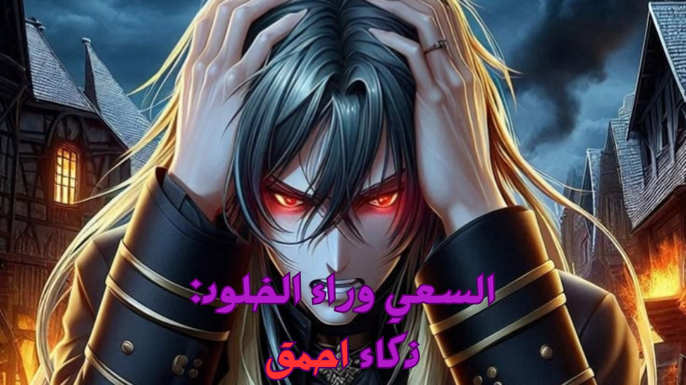
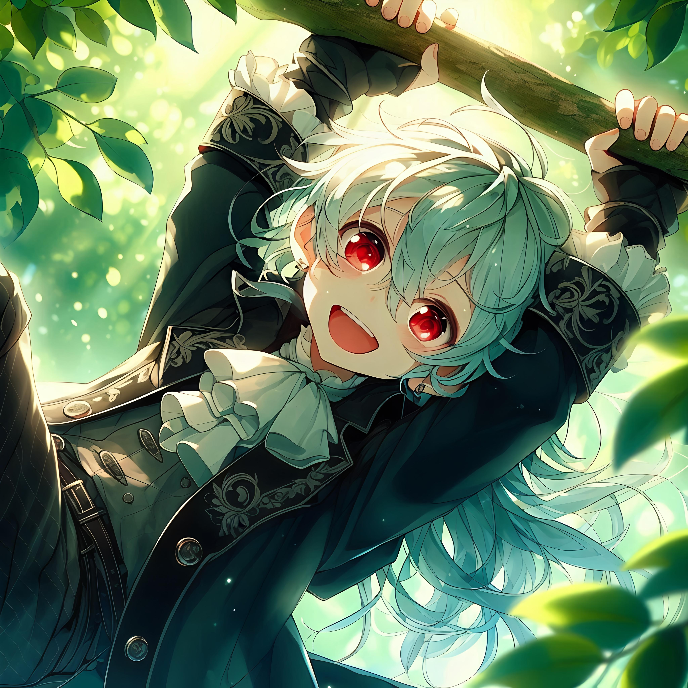
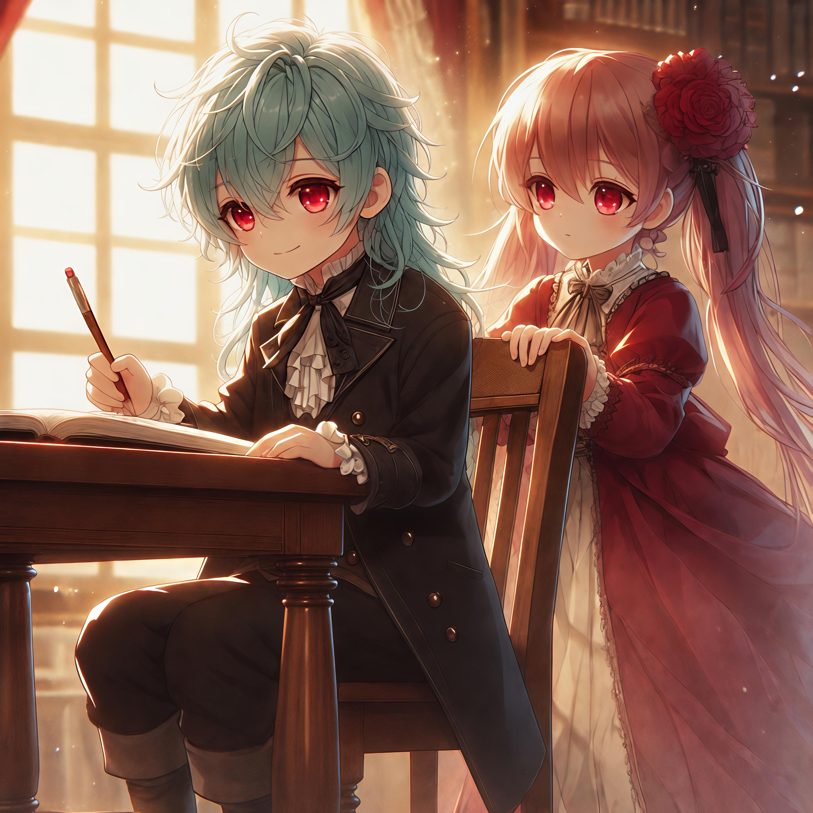
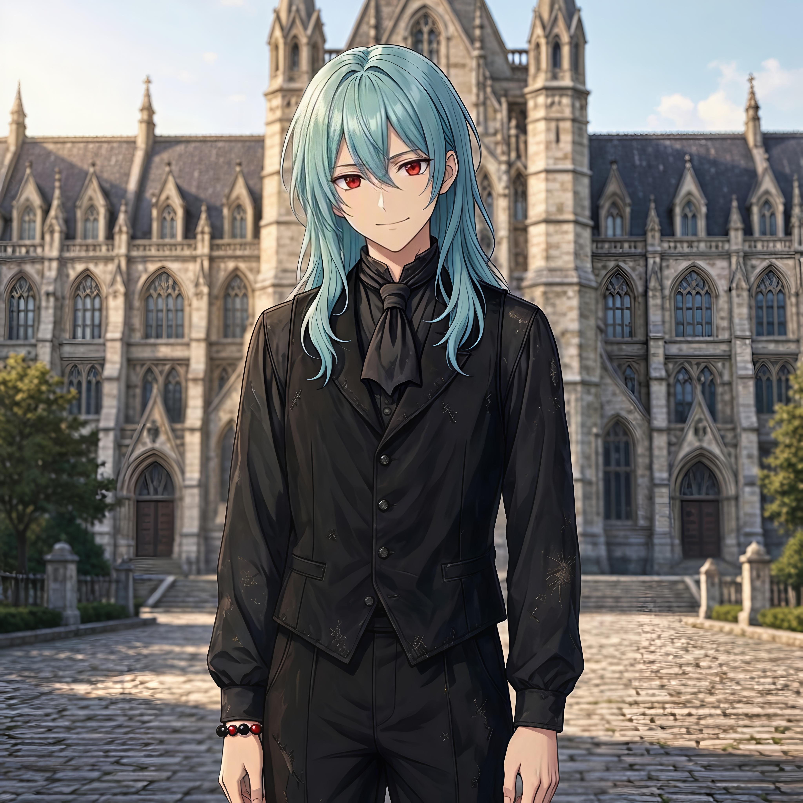
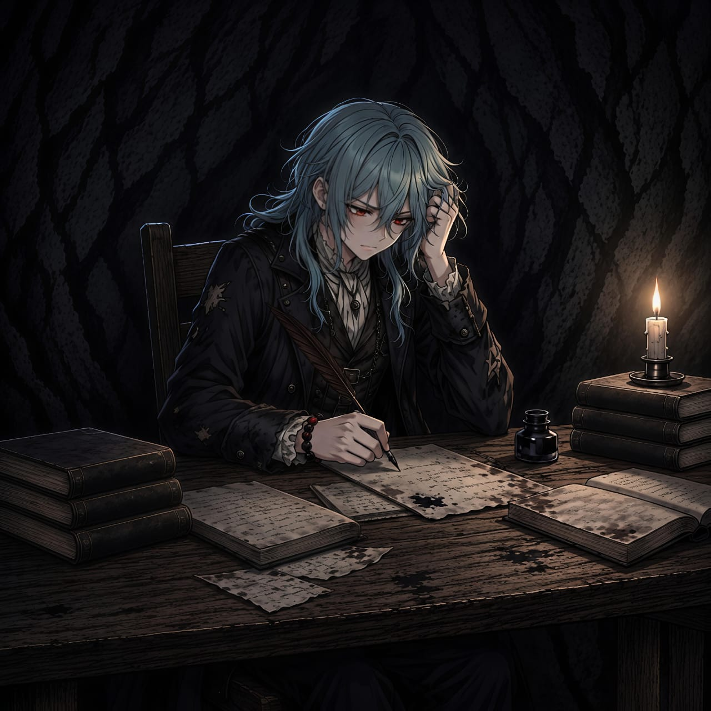

[قبل 326 عامًا من أحداث الملاكوت السابع] في قرية صغيرة منعزلة، محاطة بالأشجار، سُمع صوت بكاء طفل عند باب دار الأيتام. فتحت إحدى العاملات الباب، لتجد رضيعًا أمامه. التقطته ونظرت حولها، لكن لا أثر لأي أحد، فدخلت الدار وأغلقت الباب. وضعت العاملة الرضيع على سرير الأطفال، ثم جلبت زجاجة حليب وأرضعته. وقعت عيناها بعدها على دبوس مثبت على صدره، فقرأت ما كُتب عليه: "راياتو" [بعد سبع سنوات] تدخل العاملة إلى باحة الدار، ومعها فتاة صغيرة تتمسك بملابسها بتوتر. العاملة (منادية)- راياتو! فجأة، يتدلى صبي صغير بشعر ازرق يميل للصفار وعيون حمراء من غصن شجرة، وعلى وجهه ابتسامة واسعة. راياتو (ببهجة)- إنها الأخت فيري! ينزل راياتو من الشجرة ويجري نحو فيري. فيري- كم مرة أخبرتك ألا تتسلق الأشجار؟ ستؤذي نفسك. راياتو (يضحك برفق)- آسف، آسف. فيري- على أي حال، راياتو، هذه مورينا. إنها في نفس عمرك، لذا أرجو أن تنسجما معًا. راياتو (يبتسم)- رائع! أخيرًا هناك من يمكنني اللعب معه بينما يكبر باقي إخوتي. يمسك راياتو بيد مورينا ويسحبها معه إلى الباحة. راياتو (بابتسامة دافئة)- هيا لنلعب معًا! ترفع مورينا رأسها لتنظر إلى راياتو المبتهج، فتلمع عيناها بدفء، بينما تنسحب معه، وسط مراقبة من الأخت فيري التي تبتسم. في الليل، تتقلب مورينا في نومها قبل أن تنهض بانزعاج، وتنظر نحو سرير راياتو لتجده فارغًا. تنزل مورينا من سريرها، وتتفقّد الغرفة، لكن لا يوجد أحد سواها وثلاثة أطفال رُضّع. فتغادر الغرفة ببطء، وتتبع الممر، حتى تجد ضوء غرفة القراءة مضاءً. تدخلها بتردد، لتجد راياتو مستلقيًا على الأرض، يقرأ كتابًا بانغماس شديد. مورينا (بتردد)- ر-راياتو..؟ يرفع راياتو وجهه من الكتاب نحو مورينا، بنفس الابتسامة المبتهجة المعتادة. راياتو- مورينا! تعالي، انظري هنا. هذا الكتاب مشوّق للغاية! تقترب مورينا ببطء، وتنظر إلى الكتاب بهدوء. مورينا (بخجل)- أنا... أنا لا أستطيع القراءة... راياتو (يشير إلى الأرض بجواره)- هيا هيا! لا بأس، أنا سأقرأ لكِ. تجلس مورينا على الأرض بجوار راياتو المستلقي، فيحمل راياتو الكتاب ويريها الغلاف. راياتو- انتظري! هذا هو "معجم التشريح العام". إنه يحتوي على معلومات عن تشريح عدد كبير من الحيوانات، ويوجد أيضًا فصل للبشر وأشباه البشر! مورينا (بتعجب)- تشريح؟ راياتو (ببهجة)- أجل! إنه كتاب عن الطب! مورينا- لماذا تقرأه؟ إنه يبدو مملًا... راياتو (بدهشة)- ماذا!؟ ممل؟ إنه مليء بالمعلومات الشيقة! أعني، هل كنتِ تعرفين أن للأخطبوط ثلاثة قلوب!؟ مورينا (بتعجب)- أخطبوط؟ ما هذا؟ راياتو (يضحك)- لا تعرفين الأخطبوط؟ إنه حيوان بحري لديه ثماني أذرع! إنه حقًا حيوان بديع! فجأة، ينفتح الباب وتدخل منه الأخت فيري، تبدو منزعجة. فيري (عيون نصف مغلقة)- راياتو، ما الذي تفعله في هذه الساعة؟ ولماذا ترفع صوتك هكذا؟ راياتو (ينهض بسرعة)- الأخت فيري!؟ أنا... لقد كنت أقرأ. فيري (تمسك بطرف أنفها)- هذا ليس وقت القراءة، أنت تعرف ذلك. تفتح الأخت فيري عينيها بصعوبة، لتتفاجأ حين تقع عيناها على مورينا. فيري- مورينا!؟ ماذا تفعلين هنا أنتِ أيضًا؟ مورينا (بتوتر)- أ-أنا استيقظت فجأة، ولم أجد راياتو في سريره، لذا... فيري- حسنًا، حسنًا، هذا يكفي. أنتما الاثنان إلى السرير الآن، أريد العودة للنوم. راياتو (يسحب مورينا)- حاضر، حاضر أيتها الأخت فيري. يتجه راياتو ومورينا إلى أسِرّتهما. تبدأ مورينا في النوم، حتى تسمع صوت همس. راياتو (يهمس)- هاي مورينا... هاي. تنهض مورينا برفق، وتنظر نحو راياتو. راياتو (يبتسم)- غدًا سأساعدكِ في تعلم القراءة، اتفقنا؟ تومئ مورينا رأسها بتردد، فيضحك راياتو برفق ويخلد للنوم، فتلحقه الأخرى. تمر الأيام بسلام-إذا تجاهلنا تهور راياتو وصراخ الأخت فيري-، ويوفي راياتو بوعده في تعليم مورينا القراءة والكتابة-لم تكن العملية سلسة، لكنها مستمرة-. في تلك الفترة، نما إعجاب مورينا بشخصية راياتو المتهورة والحنونة والشغوفة في الوقت ذاته. كانت تشاهده يتعرض لإصابات من حين لآخر أثناء اللعب، وأيضًا حين مرضت الأخت فيري لأسبوع، كان راياتو يرعاها باهتمام، ولا يهمل إخوته الرضّع في الميتم، ولا تعليم مورينا. وحين يتسلل ليلًا إلى المكتبة لقراءة كتب الطب، ينتهي به المطاف دائمًا بتوبيخ من الأخت فيري لتجاهله موعد نومه. وفوق كل ذلك، لم تفارق الابتسامة محيّاه طوال تلك الأيام. مرت الأيام بسرعة، حتى جاء عيد ميلاد راياتو الثامن، فتجمع أهل الميتم للاحتفال به. جمعٌ بسيط مكوّن من راياتو، ومورينا، والأخت فيري، وثلاثة رُضّع... لكنه كان جمعٌ سعيد. راياتو (ببهجة)- أخت فيري! هل يمكنني الذهاب إلى المدرسة الآن؟ فيري (تضحك برفق)- أجل يا راياتو، سنذهب غدًا لتسجيلك. مورينا (بقلق)- مدرسة؟ أخت فيري، هل سيذهب راياتو؟ فيري (تربت على رأس مورينا)- لبعض الوقت فقط، لا تقلقي. مورينا (بحزن)- لكن... راياتو (مقاطعًا)- هل يمكن أن تأتي مورينا أيضًا؟ فيري (بحزن خفيف)- راياتو، أنت طفل ذكي. يمكنك أن ترى أن الميتم لا يملك ما يكفي من المال لإرسال شخصين إلى المدرسة. كما أن مورينا لا تملك اهتمامًا بالطب مثلك. مورينا- لا بأس، أنا لا أريد الذهاب. أنا فقط... راياتو (معانقًا مورينا)- لا تقلقي، لن أغيب طويلًا. سأأتي للزيارة باستمرار. مورينا (بتردد)- زيارة...؟ فيري- أجل، لا توجد مدرسة في القرية، لذا على راياتو الذهاب إلى المدينة. مورينا- لكن... كيف سيبقى راياتو وحيدًا؟ راياتو (بابتسامة دافئة)- لا تقلقي، يمكنني الاعتماد على نفسي. مورينا- لكن... فيري- هناك دار أيتام هناك، مالكتها صديقة لي. سيبقى معها. لم تنم مورينا تلك الليلة. وراياتو أيضًا... لكن لأسباب مختلفة. في اليوم التالي، تبقى مورينا في فراشها لفترة طويلة، حتى سمعت الأخت فيري تناديها. فيري (منادية)- مورينا! تعالي يا فتاة! تنهض مورينا من فراشها وتتجه نحو الصوت خارج الغرفة. وعند باب الميتم، وقفت الأخت فيري وراياتو وامرأة من القرية. مورينا- العمة تاهي؟ تاهي (تبتسم)- كيف حالكِ يا صغيرة؟ فيري- الرحلة إلى المدينة طويلة قليلًا، ولن أعود قبل الغد، لذا العمة تاهي ستهتم بالدار حتى عودتي. راياتو (ببهجة)- مورينا! أنا ذاهب إلى المدرسة الآن. سأعود في أقرب فرصة للزيارة، اتفقنا؟ مورينا (بحزن طفيف)- اتفقنا... بهذا، انطلق كلٌّ من راياتو والأخت فيري في طريقهما، بينما تراقبهما مورينا من الدار، والحزن بادٍ على محيّاها. يمر اليوم ببطء شديد. تنظر مورينا خارج النافذة أغلب الوقت في شرود، بينما تواجه العمة تاهي صعوبة مع الرضّع، لذا لم تنتبه إلى حالتها. بعد فترة، تتجه مورينا إلى المكتبة، وتبحث وسط الكتب حتى تلتقط أحد الكتب التي كان يقرأها راياتو: "معجم التشريح العام". تقلب مورينا الصفحات، تنظر إلى الصور، وتلتقط بعض الجمل، لكن بلا فائدة، عقلها يرفض استيعاب ما تراه، "ما سر حبه لهذه الأشياء؟" قالت في ذهنها، بينما تحك رأسها، قبل أن تغلق الكتاب وتعيده إلى مكانه. حلّ الليل، ووضعت العمة تاهي الرضّع للنوم بعد معاناة. تاهي (مرهقة)- الأخت فيري حقًا مذهلة. أن تمر بكل هذا كل يوم، وتبقى في نشاطها المعتاد... تتسلق مورينا سريرها وتضع رأسها على الوسادة، وقبل أن تشعر، كانت قد غرقت في نومٍ عميق. في الصباح التالي، تتأخر مورينا في الاستيقاظ. وحين تفتح عينيها، كانت ساعة الظهيرة قد حلّت بالفعل. تنهض من فراشها بصعوبة، بينما تحك عينها اليمنى، وتتجه نحو الحمام. وفي طريقها تمر على غرفة القراءة، وبابها مفتوح جزئيًا، فتلمح شخصًا يقرأ بالداخل. مورينا (في ذهنها)- العمة تاهي لا تجيد القراءة... من بالداخل؟ تدفع مورينا الباب بدافع الفضول، وما إن تقع عيناها على القارئ حتى تتسعان من الدهشة. كان الجالس أمام المكتب، يتصفح أحد المجلدات الكبيرة... راياتو. راياتو (يرفع رأسه)- أوه، مورينا. صباح الخير، لقد أطلتِ في النوم اليوم حقًا. مورينا (بنوع من الصدمة)- راياتو؟ ألم تذهب إلى المدينة مع الأخت فيري؟ الأخت فيري (من خلفها)- أجل، ذهبنا، لكن وجدنا دار الأيتام الخاصة بصديقتي قد أُغلقت بسبب مشاكل مادية، وبالطبع لن أترك طفلًا ذا ثماني سنوات وحده في سكن، لذا عدنا. مورينا (بنبرة حزينة)- لكن... راياتو كان يريد الذهاب إلى المدرسة بشدة... راياتو (ببهجة)- لا تقلقي يا مورينا، فقد اتفقنا مع المدير أن أدرس هنا في الدار، وآتي فقط للاختبارات، لذا لقد سُجلت بالفعل. مورينا- إذًا... أنت ستبقى هنا؟ راياتو (بابتسامة واسعة)- أجل! تندفع مورينا فجأة وتعانق راياتو بشدة. الأخت فيري (بابتسامة)- أوه، ألَن أحصل أنا أيضًا على عناق؟

تمر السنوات بنوع من الهدوء. يدرس راياتو بجد، وتراقبه مورينا بفضول، بينما تهتم الأخت فيري بالرضّع الثلاثة. وفي طرفة عين، تمر عشر سنوات. صار راياتو شابًا يافعًا، ولم تفارق ابتسامته البشوشة وجهه. وبانت على الأخت فيري آثار الكبر. فرغم أنها لا تزال في الأربعينيات من عمرها، فإن مسؤولية الميتم أشابت رأسها، وأجعدّت وجهها مع مرور السنين. أما الرضّع، فقد صاروا أطفالًا يركضون في كل أنحاء الميتم، محافظين على كون ممراته ممتلئة بأصوات الضحكات والمرح، وأحيانًا صوت انكسار الزجاج، الذي يعقبه صمتٌ لحظي، قبل أن يقطعه صوت توبيخ الأخت فيري. أما مورينا، فنمت هي الأخرى من طفلة كثيرة الاعتماد على الآخرين، إلى شابة يافعة تحمل على كتفيها مسؤولية رعاية دار الأيتام ومساعدة الأخت فيري، بالإضافة إلى ابتسامة بشوشة، مشابهة لابتسامة راياتو، بدأت تستقر على وجهها مع مرور السنين. في أحد الأيام، بينما كانت مورينا تنظف حول مدخل الدار، وصل ساعي بريد يحمل خطابًا بعنوان الدار، سلمه إلى مورينا ثم رحل. تنظر مورينا إلى الخطاب في يدها، فتجد أنه مرسل لراياتو من "أكاديمية جرينهيڤن للطب". في غرفة القراءة، كان راياتو جالسًا يقلب صفحات أحد المجلدات الكبيرة التي اعتاد على قراءتها منذ صغره، عندما دخلت عليه مورينا والخطاب في يدها. مورينا (دون النظر إليه)- جاءك خطاب من أكاديمية تُدعى "جرينهيڤن للطب". راياتو (بحماسة واضحة)- هاتيه بسرعة! مورينا (تمد الخطاب له)- هدئ من روعك قليلًا... ما المميز في هذه الأكاديمية لتتحمس هكذا على أي حال؟ يفتح راياتو الخطاب على عجل، ويقرأ محتواه، بينما تتسع ابتسامته شيئًا فشيئًا. راياتو (ببهجة عارمة)- أجل! لقد قُبلت! ينهض راياتو من مقعده في سعادة غامرة، والخطاب في يده، فيعانق مورينا ويدور بها، قبل أن يتركها بسرعة ويركض خارج الغرفة، تاركًا مورينا في حالة من التعجب والحرج. في إحدى غرف الميتم، كانت الأخت فيري تجلس تحتسي الشاي، بينما تنظر من النافذة في هدوء، قبل أن يقطعه راياتو المتحمس الذي فتح باب الغرفة، والبهجة تملأ وجهه. راياتو- أيتها الأخت فيري! لقد قُبلت في الأكاديمية! فيري (بهدوء)- أي أكاديمية؟ لقد سجلت في العديد منها. راياتو (يرفع الخطاب أمامها)- جرينهيڤن! يكاد الشاي يسقط من يد الأخت فيري عند سماع الاسم. أكاديمية جرينهيڤن للطب هي أرقى مؤسسة تعليمية في العاصمة، ولا يدخلها سوى أبناء النبلاء، وقلة قليلة من العامة المتميزين للغاية بعد اجتياز اختبار بالغ الصعوبة. في الوقت ذاته، كانت مورينا لا تزال واقفة في مكانها، وجنتاها محمرتين، وعيناها متسعتين، بلا حراك. في الأيام القليلة التي تلت الخبر، كان راياتو في قمة سعادته بينما يحزم حقائبه—حقيبة واحدة لقلة ممتلكاته—، والأخت فيري لم تترك أذنًا في القرية إلا وتلت على مسمعها الخبر. الأطفال الثلاثة يدورون حول راياتو طوال الوقت، يسألونه عن الأكاديمية وعن العاصمة بحماسة. ووسط كل هذه الأجواء، كانت مورينا تتصرف بغرابة، خاصةً حول راياتو. فكانت تتجنبه، وتفضل المكوث وحدها لفترات طويلة على غير عادتها، وتتسلل ليلًا إلى خارج الدار دون علم أحد... أو هذا ما تظنه. فقد كانت سيئةً في التسلل منذ صغرها، لكن لم يسألها أحد عن خروجها، فاعتقدت أن أحدًا لم يرها. حتى جاء اليوم الموعود، وحان موعد مغادرة راياتو الدار إلى العاصمة لبدء صفحة جديدة في حياته. حمل راياتو حقيبته واتجه إلى باب الدار، حيث انتظرته الأخت فيري بعيون دامعة، والأطفال الثلاثة بنوع من الارتباك؛ حزينين على مغادرة أخيهم الأكبر، وفرحين لحصوله على ما يتمنى. تفقّد راياتو المكان بعينيه، باحثًا عن مورينا التي تسللت ليلة أمس، لكن يبدو أنها لم تعد بعد. لم يُخفِ راياتو نظرة الحزن في عينيه وهو يعانق الأخت فيري والأطفال قبل المغادرة. فيري (وسط دموعها)- سأفتقدك كثيرًا يا صغيري، إياك وقطع الرسائل والزيارات بين الحين والآخر. راياتو (بابتسامة دافئة)- لا تقلقي أيتها الأخت، لن أقطع أيًا منها. أحد الأطفال (بفضول)- أخي، متى ستعود؟ راياتو (يفكر)- لا أدري، عندما تسنح الفرصة بالطبع، سأعود فورًا. فيري- لا أصدق كم كبرت يا صغيري، لازلت أذكر عندما كنت في عمرهم. راياتو- أشكرك أيتها الأخت من كل قلبي على كل ما فعلته لأجلي. فيري- لا داعي للشكر يا صغيري. راياتو- ما خطبك اليوم مع "يا صغيري"؟ فيري (تضحك بخفة)- ماذا؟ أتظن أنك كبرت عليها؟ مهما كبرت، ستبقى فتاي الصغير. راياتو (بضحكة خفيفة)- على أي حال، أين هي مورينا؟ ألم تعد منذ الأمس؟ فيري (بنوع من الغضب)- تلك الحمقاء لا تنفك تتسلل للخارج، أتظن نفسها غير مرئية؟ لا أصدق أنها تفوّت لحظة رحيلك هكذا. راياتو- لا عليك أيتها الأخت، لابد وأن لها أسبابها. فيري- من الأفضل لها أن تكون أسبابًا مقنعة. يفتح راياتو الباب ويخطو خارجه، بينما تتوارى إلى ذاكرته الكثير والكثير من اللحظات التي عاشها داخل تلك الجدران. رغم ضيقها، وقلة حيلة أهلها، إلا أنها آوته حين تخلى عنه أبواه... أو أيًا كانت حقيقة الأمر، فهو لا يعرفها. وسط سيل الذكريات، تفر دمعة من عين راياتو دون أن يشعر بها، قبل أن ينظر إلى الوراء ويلوح بيده. على أطراف الغابة المجاورة للقرية، كانت مورينا تركض بأقصى ما لديها، بينما تقبض يدها على شيءٍ ما بقوة. ركضت وسط القرية، تجذب الأنظار أينما حلّت، بينما تتجه بكل سرعتها نحو الدار. مورينا (تنادي)- راياتو!! يستدير راياتو بقوة، ليرى مورينا قادمة من بعيد، بينما تتنفس بقوة والعرق يتصبب من جبينها. مورينا (بإنهاك)- راياتو... انتظر... انتظر... راياتو (بابتسامته البشوشة)- مورينا، لقد كنت قلقًا من ألا أودعك قبل رحيلي. أين كنتِ؟ تصل مورينا أمام راياتو وتنحني على ركبتيها، تلتقط أنفاسها، بينما ترفع يدها إلى الأعلى، طالبةً منه أن ينتظر. مورينا (ترفع رأسها)- إذًا، حان وقت الرحيل، أليس كذلك؟ راياتو- يبدو كذلك. لا تقلقي، سآتي للزيارة في كل فرصة. مورينا- إذًا... خذ هذه. (تفتح يدها) لقد صنعتها بنفسي، رجاءً تذكرني بها. في يد مورينا، كان هناك سوار مصنوع من أحجار سوداء وحمراء بالتناوب، حُفرت على أشكال دائرية مكوّنة حلقة من الدوائر. لكنها لم تكن ما اجتذب عيني راياتو، بل كانت يدا مورينا المليئتين بالجروح الصغيرة وآثار استخدام أدوات النحت. يرفع راياتو عينيه إلى عيني مورينا المحمرتين من قلة النوم، ويبتسم برفق، قبل أن يمد يده ويلتقط السوار ويرتديه في يده اليمنى. راياتو (بصوت هادئ)- إذًا، سآتيكِ أنا أيضًا بهدية حينما أعود.

بعد رحلة هادئة، وصل راياتو إلى مسكنه الجامعي، المكوّن من غرفة واحدة وحمام صغير فقط، أما المطبخ فما هو إلا ركن صغير يحتوي على موقد حجري صغير للطهي. نظر راياتو إلى المكان من حوله، وللحظة سريعة... ارتعشت أطراف ابتسامته المعتادة، ثم عادت كما كانت. في صباح اليوم التالي، اجتمع الطلاب عند أبواب الجامعة العريقة؛ مجموعة متنوعة من أبناء النبلاء، وأبناء كبار التجار، وأبناء ذوي المناصب العالية، ووسط هذا الزخم من أصحاب المستويات العالية، وهالة الثراء المخيمة على الأبواب، كان راياتو يسير بهدوء، وابتسامته على شاكلتها المعتادة، مرتديًا نفس الزي الأسود المهترئ، والسوار الدائري يزين معصم يده. لم يخطُ راياتو بضع خطوات على أرض الحرم حتى لاقته النظرات المستعلية يمنةً ويسرى، تلاحقه كالظل، بينما يرتدي ابتسامته غير مكترث. فما يراه أمامه هو حلمه. حلم؟ بالنسبة ليتيم، فهذا أغلى ما يملك. وحلم راياتو بسيط، لكنه يحمل وزنًا هائلًا في قلبه... لطالما حلم بمنزل يضمّه، وحياة كريمة، وملابس نظيفة، والأهم من ذلك، أن يشارك كل ذلك مع إخوته في الدار والأخت فيري. يلقي راياتو بعينيه على المبنى الجامعي الشاهق أمامه، البادي في فخامته، فيطغى الانبهار على عيني اليتيم، قبل أن تتسلل إلى فؤاده فكرة... "ترى... أَمِنَ اللائق حقًا وجودي هنا؟" يمر الأسبوع الأول من الدراسة في هدوء مخادع، يرتكب فيه راياتو إثمًا كبيرًا دون علم، وهو... «البروز». فقد كان شغفه بالعلم ينسيه وضعه أحيانًا، فيحادث الأساتذة طويلًا، جاذبًا أنظار النبلاء الممتلئة بالازدراء نحو هذا العامي الذي فاقهم علمًا، رغم تقاربهم في السن. في أول أيام الأسبوع الثاني، ومع بداية اليوم الدراسي، كان راياتو يسير عبر أبواب الجامعة، حتى اصطدم به أحد التلاميذ "بالخطأ". قبض التلميذ يديه بشدة، ثم ضرب راياتو على رأسه، بينما احمر وجهه كالجمر. التلميذ (بصراخ مفتعل)- أيها العامي الحقير! ألا تملك عينين، أيها المتسول اللعين؟! كيف تتجرأ على تلويث ثيابي بقذارتك؟! ألا تعرف من أكون؟! ينظر راياتو إلى الفتى، محافظًا على ابتسامته. بدت ملابس التلميذ فاخرة حقًا، وربما كانت أغلى من كل ما أُنفق على تربية راياتو حتى الآن. وقبل أن ينطق ببنت شفة، اشتعلت النيران في يد الفتى، واندفعت يده نحو وجه راياتو بسرعة... "توقف!!" لكن الفتى تجاهل الصرخة القادمة من بين الحضور، وقبل أن تلامس يده المشتعلة وجه راياتو، اندفع صاحب الصرخة وألقى بجسده على الفتى، مسقطًا إياه أرضًا. في تلك الأثناء، كانت ابتسامة راياتو المعتادة قد استُبدلت بعينين متسعتين وفم مستقيم، يبعثان شعورًا غير مريح. تلألأ في عينيه الحمراوين نور داكن، بينما كانت فكرة مزعجة تدور في عقله... "لقد كدت أموت... فقط لأنني موجود؟.. تلك النيران... إنها سحر... إنها المرة الأولى التي أرى فيها السحر، ولكن... لماذا أُهاجم به؟" يدفع التلميذ الفتى من فوقه بقوة، بينما يشتد احمرار وجهه، ثم ينهض عن الأرض. نير (بصراخ)- أيها الوغد، أنت أيضًا! ألا تعرف من أكون؟! أنا نير هيلفم، ابن الكونت مورل هيلفم!! ينهض الفتى عن الأرض هو الآخر، بينما ينظر إلى نير بعينين ضيقتين، قاضمًا أسنانه. الفتى- ابن كونت، هذا كل ما أنت عليه. لا تحمل ذاتك أي أهمية، يا بن الكونت هيلفم. نير (رافعًا صوته)- أيها الوغد، اسرهان!! كيف تتجرأ؟! اسرهان- بل كيف تتجرأ أنت على استعمال سحر عائلتك ضد عامي لا حول له ولا قوة؟! يستمر الشجار بين التلميذين، بينما يبقى راياتو على الأرض، يراقب المشهد أمامه، قبل أن تعود ابتسامته لتغطي وجهه، وتتلوّن عيناه بالبهجة. ينهض عن الأرض، ثم يقف بين التلميذين محاولًا الفصل بينهما قبل أن تتصاعد الأمور. راياتو (واقفًا بينهما)- تمهّلا! نير (لا يزال يصرخ)- ابتعد عن طريقي، أيها القذر! "ماذا يحدث هنا؟!" تجمّد الجميع في أماكنهم عند سماع صوت العميد الغاضب. تقدّم الرجل نحو الطلاب بخطوات بطيئة. نير (بتوتر)- سيدي العميد! أ-إنه العامي! هو من اصطدم بي أولًا! ينظر العميد إلى راياتو بنظرة لم يفهمها في ذلك الوقت، ثم يُشيح بنظره عنه. العميد- لا يهمني من فعل ماذا. فليغرب الجميع عن ناظري حالًا! وبالفعل، بدأ الحشد بالتحرك. لم يركضوا، لكنهم هرولوا مسرعين. يمر اليوم بهدوء بعد ذلك، يراقب فيه اسرهان راياتو ويحادثه بخفة من وقت لآخر، حتى يلتقي به في فناء الأكاديمية في نهاية اليوم. اسرهان (مناديًا)- راياتو! راياتو (يلتفت إليه)- أوه، اسرهان، ماذا هناك؟ اسرهان- هل أنت مغادر؟ ما رأيك في مرافقتي إلى أحد المطاعم؟ راياتو- لطيف منك أن تسألني، لكن سيتوجب عليّ الرفض. اسرهان- ولماذا؟ ينظر راياتو حوله برفق. لا أحد في المكان سواهما، فقد غادر الجميع بالفعل. راياتو (بابتسامته المعتادة)- اعذرني، ولكن لا يمكنني الدخول إلى تلك المطاعم التي يجتمع فيها النبلاء. سيكون من غير اللائق وجود عامي مثلي هناك. اسرهان- رجاءً، لا داعي لتلك الترهات. ما الفارق بيننا على أي حال؟ راياتو- الفارق كبير. أشكرك على لطفك. يستدير راياتو ليغادر، لكن اسرهان يمسك بكتفه ويسحبه. اسرهان (رافعًا صوته)- لا تكن هكذا! حين سحب اسرهان راياتو، رأى وجهًا خلت منه الابتسامة، وعينين واسعتين تبعثان شعورًا مزعجًا، فتركه وتراجع قليلًا. راياتو- لا أكن كيف؟! لماذا لا تتركونني وشأني فحسب؟! (يعلو صوته) لقد كدت أموت اليوم! لقد هاجمني أحدهم بالسحر لمجرد أنني موجود!! يتراجع اسرهان أكثر، فهو لا يفهم تلك النظرة في عيني راياتو. إنها مزعجة، مزيج من الغضب والكراهية و... الحزن؟ راياتو- تريد أن تعرف الفارق بيننا؟ حسنًا، الفارق هو أنك وُلدت وسط عائلة نبيلة، وأنا يتيم بلا أبوين. الفارق أن عائلتك، وكل العائلات النبيلة، قد احتكرت السحر لنفسها منذ أكثر من ألف عام. الفارق هو أنك لا تحتاج إلى الادعاء طوال اليوم بأنك بخير! أي حياة هذه التي أعيشها؟! ذلك الميتم لم يمتلك شيئًا!! لولا شفقة أهل القرية لمتنا جوعًا!! يبقى اسرهان صامتًا، غير مدرك لما يحدث. لا يزال راياتو يصرخ، لكن عقل اسرهان انفصل عن الواقع. كل ما يراه هو تلك العينان المزعجتان اللتان بدأتا تدمعان، ويسمع أصواتًا فقدت معناها في عقله... حتى صمت راياتو فجأة، وعاود الابتسام. راياتو (بهدوء)- اعذرني، لا أستطيع مرافقتك، فلدي واجبات. يستدير راياتو ويذهب. هذه المرة، لا يوقفه أحد... لم يحاول اسرهان التقرب من راياتو مجددًا بعد ذلك اليوم. تعود الأيام إلى طبيعتها الهادئة، بينما يتعرض راياتو للمضايقات بين الحين والآخر. وعند اقتراب نهاية العام الدراسي، بدأ مرض غريب بالانتشار. لا أحد يعرف مصدره، لكنه تفشّى بين النبلاء تحديدًا بشكل مرعب. أما بين العامة، فكان ضعيف الانتشار، لكنه لا يزال قاتلًا... في غضون شهر واحد من تفشيه، سقط أكثر من ثلاثمئة نبيل وعشرين عاميًا ضحية لفتكه. حلّت نهاية العام الدراسي مبكرًا، وأُرسل جميع الطلاب إلى منازلهم بينما يجري البحث في أمر هذا المرض. بطبيعة الحال، عاد راياتو إلى القرية، حاملًا حقيبته، ومتجهًا إلى الدار بابتسامته المعتادة. كان أهل القرية يرحبون به عند كل منعطف، حتى وصل إلى الدار وطرق الباب. بعد بضع لحظات، فتح الباب أحد إخوته الصغار، وما إن رآه حتى نادى باسمه ببهجة، مما دفع الأخوين الآخرين إلى الركض نحو الباب، وخلفهم الأخت فيري التي كانت تسير بثقل. أحد الأطفال (ببهجة)- راياتو! لقد عدت! لقد عدت! اشتقنا إليك كثيرًا! أخبرني، كيف هي العاصمة؟! فيري (بصوت حنون)- اهدؤوا قليلًا، لقد عاد للتو. دعوه يستريح أولًا. يبتسم راياتو للأخت فيري، ثم ينظر يمينًا ويسارًا، قبل أن تعود عيناه إليها، فيلاحظ علامات الإرهاق الواضحة عليها. راياتو- لقد عدت، أيتها الأخت فيري. لماذا تبدين بهذه الحالة؟ فيري- اقلق على نفسك أولًا، أيها الصبي. لا بد أن الطريق كان شاقًا، اذهب واسترح. راياتو- كما تشائين. يتحرك راياتو نحو غرفته التي يتشاركها مع إخوته، ويستلقي على سريره. وقبل أن يدرك، كان النوم قد غلبه... يستيقظ راياتو ليلًا، وينظر حوله ليجد إخوته الثلاثة نائمين في أسرّتهم. يحرك عينيه قليلًا، ليجد سرير مورينا فارغًا. ينهض راياتو من سريره ويتجه نحو الباب، ثم إلى المطبخ بحثًا عن كوب من الماء. وفي طريق عودته، يلاحظ أن باب إحدى الغرف المغلقة عادةً موارب، فيتغلب عليه فضوله ويدفع الباب برفق...

ينفتح الباب ببطء، وحين تضيء الشعلة داخل الغرفة أعين راياتو تتسعا وتختفي ابتسامته؛ فبمجرد أن انفتح الباب، وقعت عيناه على مورينا المستلقية على السرير، ووجهها شاحب، وأنفاسها بطيئة، ومن فمها... إنها أعراض ذلك المرض... تستدير الأخت فيري بقوة من مكانها بجوار مورينا، لتنظر نحو راياتو، قبل أن تنهض وتسحبه إلى خارج الغرفة وتغلق الباب. فيري (بهمس)- ماذا تفعل هنا؟! راياتو (لا يزال ينظر نحو الباب)- مورينا... لماذا...؟ فيري (تتنهد)- حسنًا، أجل، إنها مصابة. راياتو (تشتعل عيناه)- إذًا لماذا لم تخبريني؟! فيري- اخفض صوتك، أتريد إيقاظها؟ إنها تجد صعوبة في الخلود إلى النوم بالفعل. فقط اهدأ... أرجوك... يستدير راياتو نحو غرفته ويسير بسرعة حتى يصل إليها، ثم يفتح حقيبته ويُخرج صندوقًا خشبيًا صغيرًا، ويعود إلى غرفة مورينا. تنظر الأخت فيري نحوه، لكنها لا تتكلم. يقترب راياتو بهدوء، ويضع الصندوق بجانبها، ثم يغادر في صمت... في صباح اليوم التالي، يستيقظ الأطفال ويذهبون لإيقاظ راياتو، لكنهم يجدون فراشه فارغًا. كانت الأخت فيري نائمة على المقعد بجوار مورينا، حتى سمعت صوت سعال، فاستيقظت فجأة ونهضت لتحضر كوبًا من الماء لمورينا. تشرب مورينا بضعف، ثم تنظر إلى الأخت فيري. مورينا (بصوت خشن)- الأخت فيري... أتعلمين...؟ لقد بدأ وجهك يشحب. تضرب الأخت فيري مورينا على رأسها برفق. فيري- حمقاء، لقد صرت عجوزًا، وبشرتي لم تعد تهم الآن. تقع عينا مورينا على الصندوق بجوارها. مورينا (تحمل الصندوق)- ما هذا؟ فيري (بتردد)- إنه... راياتو تركه هنا بالأمس. مورينا (تضيء عيناها)- راياتو عاد؟! فيري- هدّئي من روعك يا فتاة، عليكِ جعله يركض وراءكِ، لا العكس. مورينا (يحمر خدّاها)- هاي! أيتها الأخت! تضحك الأخت فيري برفق قبل أن تنهض. فيري- سأذهب لإعداد الإفطار، لا تتحركي. تغادر الأخت فيري، تاركةً مورينا وحدها تتفحص الصندوق قبل أن تفتحه... بعد فترة وجيزة، تنادي الأخت فيري لتناول الإفطار، فيتجمع الأطفال. أحد الأطفال- الأخت فيري، لا نستطيع إيجاد أخي راياتو. تنظر الأخت فيري نحو الأطفال بهدوء، بينما تدور عدة أفكار في عقلها. فيري- لا تقلقوا، فقط اجلسوا. أنا متأكدة أنه سيعود قريبًا. تسعل الأخت فيري برفق، واضعةً يدها على فمها، قبل أن تدخل مورينا الغرفة بصعوبة. مورينا (بصوت خشن)- عليكِ الانتباه إلى صحتك أكثر، أيتها الأخت. فيري (تصرخ)- ماذا تفعلين خارج فراشك؟! ألم أقل لكِ ألّا تتحركي؟! تشدّ عينا الأخت فيري حين تلاحظ دبوس شعر صغيرًا يحمل شكل زهرة لوتس على رأس مورينا، لكنها لا تعلق. مورينا (بضعف)- أعتذر، لكنني أشعر أنني أستطيع الحراك قليلًا اليوم. في تلك اللحظة، يمر راياتو مسرعًا في الرواق خارج الغرفة، دون أن ينتبه إليهم. «أخي!!» يناديه الأطفال الثلاثة، لكن راياتو لا يلتفت إليهم، بل يواصل طريقه نحو المكتبة. «ر-راياتو...» يتجمد راياتو في مكانه عند سماع صوت المنادي، ثم يستدير بعد لحظات ليجد مورينا واقفة بصعوبة، بينما تحمل ابتسامة ضعيفة على وجهها. وفي شعرها، كان الدبوس الذي اشتراه لها بأكثر من نصف مصروفه لهذا العام الدراسي. تلتوي شفتا راياتو لترتسم عليهما ابتسامته المعتادة، لكن عينيه تحافظان على اتساعهما وبريقهما الداكن ذي الشعور غير المريح، قبل أن يتقدم نحوهم. راياتو (ببهجة)- لم نتناول الإفطار معًا منذ زمن، كم اشتقت إلى هذه اللحظات! يجلس راياتو على مقعده المعتاد، بينما تترقرق عينا مورينا وتجلس بجواره، وتتسع ابتسامات الأطفال المبتهجة وهم يتجمعون حوله... وحدها الأخت فيري شعرت بشعور مزعج حين رأت تلك النظرة في عينيه، لكنها بقيت صامتة. «أخي، أين كنت؟» يسأل أحد الأطفال، لكن راياتو ينفض أنفه ضاحكًا. راياتو- ألم تخبرك الأخت فيري أن الكلام أثناء الطعام من العادات السيئة؟ تمر بضعة أيام. تهتم الأخت فيري بمورينا، ولا تظهر على حالة مورينا أي علامات تحسن أو تقهقر، لكن حالة الأخت فيري نفسها تزداد سوءًا مع مرور الوقت... يزداد وجهها شحوبًا، ويشتد سعالها. أما الأطفال، فحالهم كما هو. في حين يبقى راياتو مختفيًا معظم اليوم، ولا يعود إلا لفترات قصيرة، دون أن يعرف أحد أين يذهب أو ماذا يفعل. في أعماق الغابة، وداخل كهف مهجور، كانت هناك شعلة تضيء طاولة تحمل كتبًا وأوراقًا كثيرة، وطاولة أخرى تحمل عدة مواد كيميائية وأدوية ونباتات وأعضاء حيوانية عديدة، وقفسًا يضم بضعة فئران. «خطأ آخر!» تعلو صرخة في الكهف، قبل أن تُلقى ورقة أخرى داخل الشعلة، وتَبدأ الكتابة على ورقة جديدة بقوة حتى تمزقت من شدة ضغط القلم. تتساقط الدموع على الورقة الممزقة، وتضيء الشعلة وجه راياتو الخالي من البسمة، وعينيه اللتين تحملان قهرًا هائلًا. راياتو (وسط دموعه)- لماذا..؟ لماذا..؟ فقط لماذا أنا!؟ ماذا فعلت ليحدث كل هذا لي!؟ يضرب راياتو الطاولة بقوة، مما يفزع الفئران النائمة في القفص، قبل أن ينهض ويطفئ الشعلة. في الميتم، كان الأطفال يجلسون في المكتبة حول الأخت فيري، التي كانت تقرأ لهم قصة من أحد الكتب بصعوبة، دون أن يلاحظ الأطفال ذلك. فيري (في ذهنها)- أيها الشقي، أين أنت حتى هذه الساعة المتأخرة؟.. ما هذا..؟ لماذا لا.. لماذا لا أستطيع الرؤية بشكل جيد...؟ في الخارج، كان راياتو يقترب من الدار، بينما كانت ابتسامته تمتد من أذن إلى أخرى. طرق الباب مرة... وأخرى... وثالثة. «أيتها الأخت!!» حين سمع راياتو صراخ الأطفال في الداخل، لم يجد أمامه سوى أن يضرب الباب بكتفه ويفتحه، ثم يسرع نحو مصدر الصوت. وما إن دخل الغرفة حتى اقشعر بدنه... كان الأطفال يصرخون بينما يحاولون إيقاظ الأخت فيري الساقطة على الأرض، وعيناها متسعتان، والدماء تتدفق من فمها... يتقدم راياتو ببطء، بينما تعود الابتسامة التي مُحيت عن وجهه إلى مكانها، ويسحب الأطفال بعيدًا عنها. راياتو- لقد حان وقت النوم يا صغار، هيا، اتركوا الأخت فيري تستريح، إنها متعبة... تلك الحالة التي تمر بها الأخت فيري الآن... هي نفس الحالة التي وُجدت عليها جثث ضحايا ذلك المرض... في صباح اليوم التالي، اجتمع أهل القرية عند المقابر، بينما دُفنت جثة الأخت فيري بلا جنازة. أمام القبر، وبعد رحيل الجميع، وقف راياتو ينظر إليه بعينين متسعتين... راياتو (بصوت مبحوح)- الأخت... فيري... يهطل المطر. وفي تلك اللحظة، بدا الأمر بالنسبة إلى راياتو... مضحكًا. فجأة، علت ضحكاته أمام القبر بينما انهمر المطر عليه. أخذ ينظر نحو السماء ويضحك بشدة، بينما تدمع عيناه. في الميتم، جلس الأطفال حول مورينا، التي تركت فراشها وذهبت إلى غرفتهم، حيث تجمعوا حولها مصدومين وغير قادرين على فهم ما يجري، منتظرين عودة أخيهم الأكبر، الذي لم يعد تلك الليلة. في الكهف، وقف راياتو أمام قفص الفئران، ينظر إليها بعينين أنهكهما البكاء. «عديمة النفع». حمل راياتو قفص الفئران وألقاه في الشعلة. علت صرخاتها بينما كانت النار تلتهم أجسادها، ووقف راياتو أمامها يشاهد... ويشاهد... ويبتسم... ويضحك. في صباح اليوم التالي، كان راياتو يسير في القرية عائدًا إلى الدار، بعد أن قضى ليلته نائمًا في الكهف. كانت بشرته مجعدة، وعيناه متعبتين، وحركته بطيئة. يطرق راياتو باب الدار، فيفتح له أحد إخوته. وعندما تقع عينا راياتو عليه، تحتل عقله فكرة... يستلقي راياتو على فراشه في صمت، بينما تستلقي مورينا على فراشها بالقرب منه، تنظر نحوه ولا تجد ما تقوله... حلّ الليل، ولم يتحرك أحد. لم يغادر راياتو فراشه، وكذلك مورينا والأطفال الذين غلبهم النوم. ينهض راياتو، فتتبعه مورينا بعينيها بينما يتقدم نحوها. مورينا (بضعف)- ر-راياتو...؟ راياتو (بصوت خافت بالكاد يُسمع)- أنا آسف. مورينا- ماذا قلت؟ ارفع صوتك، لا أستطيع سماعك. يقترب راياتو من مورينا أكثر، ويحملها من فراشها. مورينا (وقد احمرّ خداها)- ماذا تفعل؟ هل جننت!؟ يبقى راياتو صامتًا بينما يسير بمورينا نحو الغرفة المنعزلة، ويضعها على الفراش. راياتو- ابقي هنا... سأعود قريبًا بالعلاج... يغادر راياتو، ثم يعود حاملًا حقنة، يغرزها برفق في ذراع مورينا ويستخرج بعض الدماء، ثم يمسح موضع الحقن ويستدير للرحيل. مورينا (بصوت خشن)- إنه ليس خطأك... رجاءً، لا تضغط على نفسك. للحظة، تجمّد راياتو في مكانه، لكنه عاد إلى المشي من جديد، وأغلق الباب وراءه، ثم عاد إلى غرفته ووضع الحقنة في صندوق خشبي، وحمله، قبل أن ينظر نحو الأطفال... يدخل راياتو الكهف، ويضع الصندوق الخشبي على الطاولة، ثم يبدأ في تجهيز بعض المعدات. «أخي، ماذا نفعل هنا؟» سأل أحد إخوته الثلاثة الواقفين خلفه، فاستدار إليهم. راياتو (مبتسمًا)- ألا تريدون مساعدتي في علاج أختكم مورينا؟ أحد الأطفال (بتردد)- أجل، نريد ذلك، لكن هذا المكان... طفل آخر (مرتجفًا)- إنه مخيف... راياتو (لا يزال مبتسمًا)- لا تقلقوا، فقط اجلسوا هناك وانتظروني. يجلس الأطفال حيث أشار لهم راياتو، الذي بدأ في استخراج الدماء من الحقنة وتفريغها في حاوية، قبل أن يحمل حقنة أصغر ويتحرك نحو الأطفال. راياتو (مبتسمًا)- هيا، أخبروني، من منكم الأشجع..؟ تمر الأيام، ويستمر راياتو في زيارة مورينا يوميًا ليقدم لها الإفطار والغداء. ودائمًا ما تسأله: "لماذا لا يزورني الصغار؟" وكان يجيبها دائمًا بابتسامة: "مناعتهم ضعيفة، لذا طلبت منهم عدم الدخول إلى هنا حتى تتحسني". بعد حوالي أسبوع، كان راياتو واقفًا في الكهف، ينظر نحو ثلاث جثث ملقاة على الأرض، والدماء تتدفق من أفواهها، وعيونها متسعة... «عديمو النفع». في الأيام القليلة التي تلت ذلك، بدأ بعض أهل القرية يختفون واحدًا تلو الآخر، وانتشر الذعر بينهم. في أحد الأيام، كان أحد الرجال يسير ليلًا، حتى وقعت عيناه على مشهد مفزع؛ رجل يحمل طفلًا نائمًا ويسير به نحو الغابة. تبعه الرجل، ورآه يدخل ذلك الكهف، لكنه لم يتمكن من رؤية وجهه، لذا بقي في مكانه منتظرًا خروجه. في داخل الكهف، كان راياتو يحقن الطفل بدماء مورينا، لكن جسده لم يتحملها، ومات في غضون دقائق. راياتو (بصوت ضعيف)- تبًا! أنا قريب... قريب جدًا... لم يتبقَّ سوى القليل... ينظر راياتو إلى حاوية الدماء، التي لم يتبقَّ فيها ما يكفي سوى لجرعة أخيرة... يحمل الحقنة ويغرزها في ذراعه بقوة، ثم يحقن الدماء في جسده. بعد بضع دقائق، يخرج راياتو من الكهف ويتجه نحو الدار. في تلك اللحظة، يراه الرجل المنتظر خارج الكهف، ويدرك هويته. ينتظر حتى يبتعد راياتو، ثم يدخل الكهف من بعده. وكلما اقترب من الضوء في داخله، ازدادت الرائحة المريعة سوءًا، حتى اضطر إلى تغطية أنفه. وما إن وصل إلى مصدر الضوء حتى فزع من هول ما رأى؛ جثث ملقاة على الأرض في كل مكان، وأوراق مملوءة بكلمات لا يفهمها، وأدوات طبية بدت له وسط ذلك المشهد كأدوات شعوذة. غادر الرجل مسرعًا. وبعد بضع دقائق، عاد راياتو إلى الكهف حاملًا المزيد من الدماء، وحقنها كلها في جسده، مما أدى إلى تدهور حالته بشكل مفرط، حتى سقط أرضًا على حافة الموت... بصعوبة، يتسلق راياتو الطاولة ويسحب المصل الموضوع عليها، وهو سائل بلون أحمر فاقع. يغرس الحقنة في رقبته ويحقن محتواها بالكامل... تمر بضع ثوانٍ... وفجأة، يشعر راياتو بأن جسده أصبح أخف، ويبدأ لون بشرته الشاحب بالزوال، وتعود إليه قوته. يرفع راياتو جسده، ليجد أنه قد شُفي بالكامل... في ثوانٍ معدودة... يظهر راياتو وهو يركض وسط الغابة، حاملًا العلاج في يده، وقد علت محياه ابتسامة بهجة. لكن ما إن اقترب من الدار حتى بدأت خطواته تتباطأ... أضاءت النيران عينيه، بينما شاهد الدار التي ترعرع فيها منذ الصغر تشتعل أمامه... كان أهل القرية مجتمعين حولها، يحملون المشاعل والرماح، وعلى حدّ أحد تلك الرماح... كانت هناك رأس مفصولة عن جسدها... اقترب راياتو ببطء، بينما بدأت النيران تكشف ملامح تلك الرأس... لمع دبوس على شكل زهرة لوتس في شعرها... سقط العلاج من يد راياتو وتحطم على الأرض، قبل أن يسقط هو الآخر على ركبتيه، مراقبًا المشهد الجحيمي أمامه... «إنه هنا!!» «اقتلوا المشعوذ!!» «انتقموا لإخوتكم!!» يتحول نظر راياتو في تلك اللحظة إلى الأحمر، بينما تتدفق الدماء من عينيه وفمه وأنفه، بعد أن طُعن بعشرات الرماح... في تلك اللحظة، اشتعلت دماؤه نارًا تلتهم كل من حوله... أضاءت عيناه باللون الأحمر، وطالت أنيابه، وانفردت أجنحته السوداء... «شيطان!!» «إنه شيطان!!» ينظر راياتو إلى انعكاسه في دمائه... لقد نمت أنيابه بشكل ملحوظ... ذلك لم يكن علاجًا... بل لعنة. ينفجر راياتو صارخًا، لكن لم تخرج من فمه أي كلمات، بل مجرد أنين، بينما يندفع ويبدأ بقتل كل من تقع عليه عيناه... حتى عضّ أحدهم، وبدأت أنيابه تمتص دمه حتى سقط جسده خاليًا منه... «م-مصاص دماء!!» «لقد كان يختبئ بيننا!!» «اهربوا!!» «بل قاتلوا!!» يندفع نحوه رجل يحمل سيفًا ويقطع رأسه... لكنها تعود إلى مكانها... في غضون بضع دقائق، كان راياتو جاثيًا على ركبتيه أمام جسد مورينا... يمسك برأسه ويصرخ، بينما تشتعل المنازل من حوله بالنيران، والأرض مصبوغة بالحمرة، والجثث تملؤها في كل مكان... في تلك اللحظة... ظهر أمام راياتو رجل ذو شعر داكن مجعد، ولحية كثيفة، يرتدي رداءً أسود طويلًا... «هل تريد أن تكون بطلًا؟» (تمت)